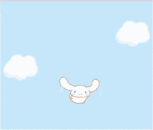

Cross Stitch
Pick a thread, then click or drag on the cloth. Match the symbols!

All stitched! Cinnamoroll says thank you
0 / 0 stitches

a tiny, cozy game. no timers, no pressure.
Pick a thread, then click or drag on the cloth. Match the symbols!
All stitched! Cinnamoroll says thank you
0 / 0 stitches